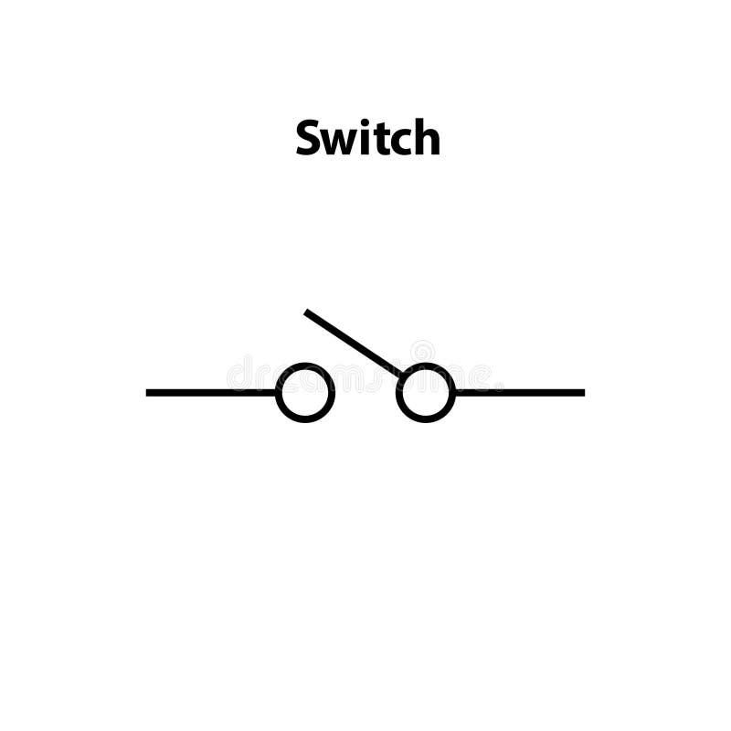

| Component |
Symbols |
S.I Unit |
Application |
| Resistor |
 |
Ohms |
A resistor is used to:
Limit or control electric current in a circuit.
Divide voltage across components.
Protect sensitive devices from excess current.
Generate heat in devices like heaters.
Adjust signal levels in electronic circuits |
| Capacitors |
 |
microfarads |
Capacitors are used to:
Store energy: Act as small energy reservoirs in electronic circuits.
Filter signals: Remove noise or smooth voltage in power supplies.
Timing circuits: Control the timing in devices like clocks or oscillators.
Coupling/Decoupling: Allow AC signals to pass while blocking DC or stabilize voltage.
Power factor correction: Improve efficiency in AC power systems. |
| cell |
 |
m^-1 |
Source of electricity |
| Inductor |
 |
Henry (H) |
An inductor is used to store energy
in a magnetic field, filter signals,
and control current in electrical circuits.
Key applications include power supplies,
transformers, radios, and noise suppression
in electronic devices. |
| Diodes |
 |
Volts (V) |
Rectification: Converting AC to DC in power supplies.
Voltage Regulation: Stabilizing voltage with Zener diodes.
Overvoltage Protection: Protecting circuits from voltage spikes.
LEDs: Emitting light for displays and indicators.
Signal Demodulation: Extracting signals in communication systems.
Switching: High-speed electronic switches.
Photodiodes: Light sensors and solar cells. |
| Switches |
 |
Doesn't have a specific SI unit |
A switch is primarily used to turn
a circuit on or off, allowing users to
control the flow of electricity in a
device by essentially "making" or "breaking"
an electrical connection, commonly seen
in everyday applications like turning on lights,
appliances, or controlling machinery in
industrial settings. |
| bulb |
 |
Lumen(lm) |
converts electrical energy to light energy |